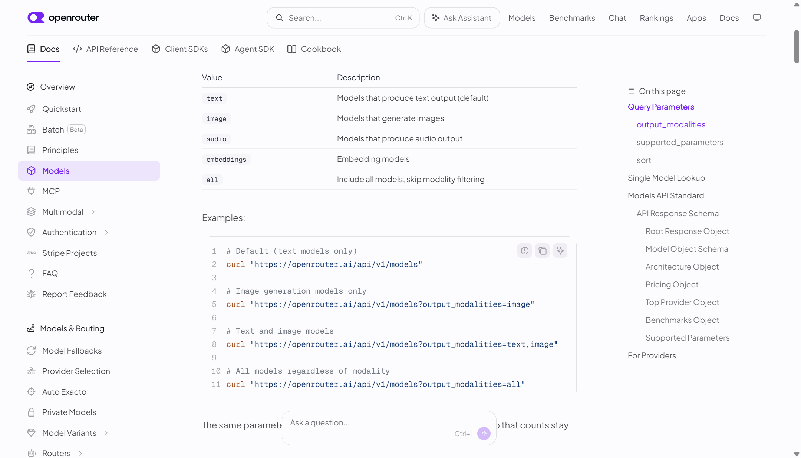
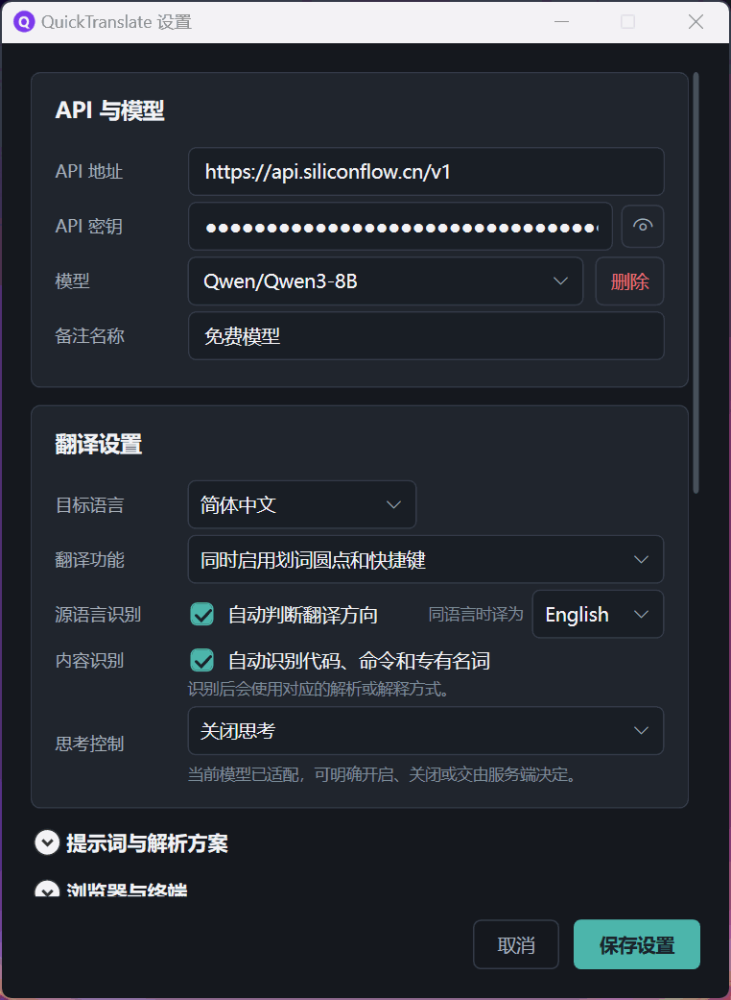
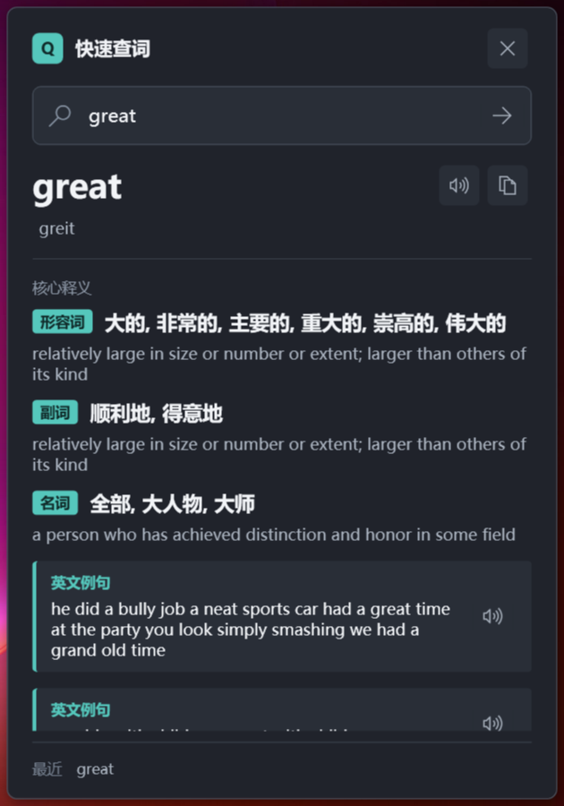
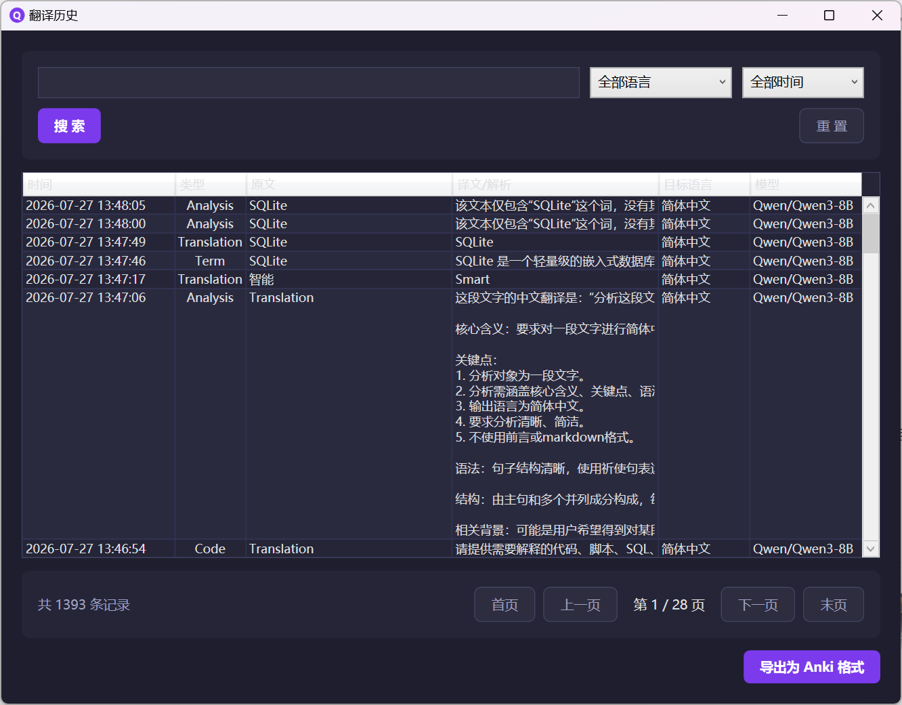
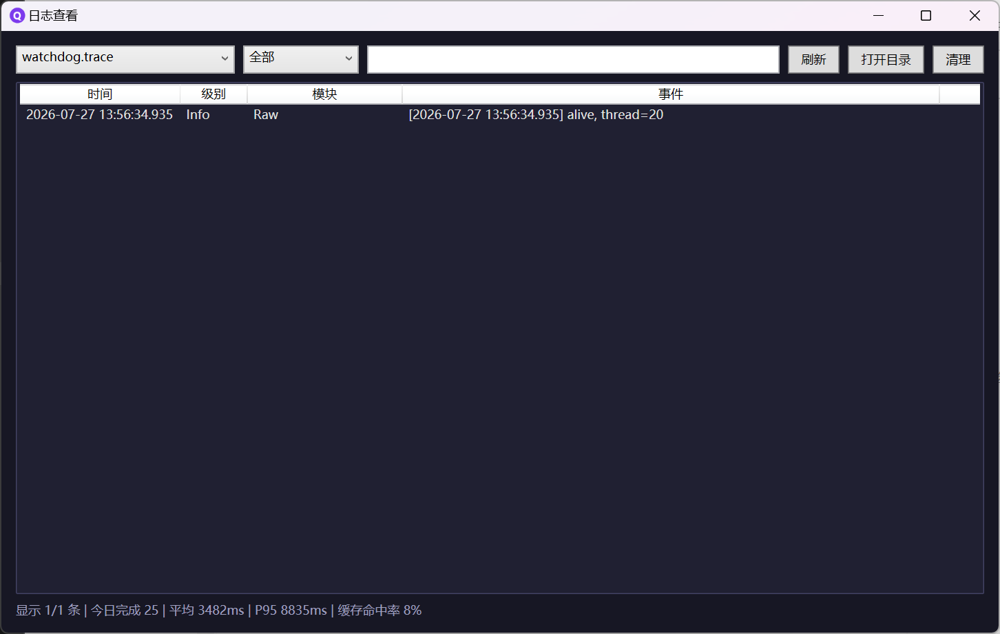

AI 智能翻译
根据选中文本的类型与语言自动选择任务和翻译方向，支持在当前会话内切换目标语言或模型，并以流式方式呈现结果。
不绑定任何服务商 —— 使用你自己的 OpenAI 兼容接口，自由切换 Base URL 和 Model。
根据选中文本的类型与语言自动选择任务和翻译方向，支持在当前会话内切换目标语言或模型，并以流式方式呈现结果。
ECDICT + OEWN 本地词典优先，云端模型补全缺失中文；本地未命中时由 AI 生成结构化释义，并可补充音标、例句与搭配。
对深度解析结果继续追问，最多保留 10 轮上下文；从一个疑问出发，把陌生概念逐层弄懂。
本地命中的查词默认不联网；设置和历史保存在本机，隐私日志不记录选中文本、Prompt 正文或 API Key。
从划词触发到结果质量门禁，十六类能力覆盖完整链路。
SSE 流式逐字输出 · 拖拽/双击/三击划词 · 红点引导交互 · 悬浮窗即时展示 · 14 种语言支持 · 自动判断与会话级手动方向切换
自动区分翻译 / 代码 / 术语，路由专用 Prompt · 低置信度技术文档保持完整翻译 · 浏览器/终端场景感知
同文本支持翻译 · 命令解析 · 术语解释 · 深度解析四种模式切换 · 已完成结果瞬时恢复 · 当前会话模型切换
深度解析结果内连续追问 · 最多 10 轮上下文 · 流式回答 · 历史节点定位 · 失败尾轮重试
本地词典（ECDICT/OEWN）优先 · 未命中自动回退大模型查词 · 缺失中文一键 AI 补全 · 词性统一中文显示 · 结构化释义/音标/例句/搭配 · 朗读与复制
流式增量渲染 · 围栏闭合后语法高亮与独立复制 · 表格/列表/引用 · 仅允许 http/https 链接
Edge TTS 在线合成 · 选中文本朗读 · 翻译结果一键朗读 · 自动语种匹配
SQLite 本地持久化 · 按时间/语言搜索筛选 · 分页浏览 · 双击复制 · Anki 格式一键导出
两套独立全局快捷键 · 托盘单击快速查词 · 右键恢复最近翻译 · 开机自启 · 浏览器内触发 · 单实例保护
4 种内置预设（通用/语言学习/文学赏析/商务）· 自定义方案新建/复制/编辑/删除 · 多轮方案管理
内置四家供应商预置 · 自定义 OpenAI 兼容 Base URL 与 Model · 已保存配置支持备注与分组 · 悬浮窗临时切换当前会话模型 · 三态思考控制
LRU+TTL 语义缓存 · latest-request-wins 请求冲突防护 · 请求快照隔离 · 设置修改不影响运行中请求
原文回显检测与状态提示 · 可疑结果不进入缓存或历史 · 不静默重试或自动切换模型
GitHub Release 分发 · 启动时静默检查 · 应用内展示更新说明 · 系统代理兼容 · Inno Setup 双版本安装包 · SHA256 校验
零污染剪贴板获取 · 终端安全取词避免误发 Ctrl+C · 日志脱敏（不记录原文/API Key/Prompt 正文）· 本地配置不上传
结构化 JSON Lines 日志 · 专用查看器 · 多文件切换 · 级别/关键字筛选 · P50/P95/P99 延迟 · 自动清理
点击任意画面可放大查看。





不想配置开发环境？直接下载安装包，双击即用，无需安装 .NET 8 SDK。
所有历史版本、更新日志与 SHA256 校验值见 Releases 页面。安装后启动会自动最小化到系统托盘，右键托盘图标即可配置。
首次运行会自动打开设置窗口并预选 SiliconFlow Qwen/Qwen3-8B；填写自己的 Base URL、API Key 与 Model 即可。
| 服务商 | Base URL | Model |
|---|---|---|
| 硅基流动（推荐） | https://api.siliconflow.cn/v1 | Qwen/Qwen3-8B |
| 智谱 GLM | https://open.bigmodel.cn/api/paas/v4 | glm-4.7-flash |
| DeepSeek | https://api.deepseek.com/v1 | deepseek-v4-flash |
| OpenAI | https://api.openai.com/v1 | gpt-5.4 |
模型下拉框按域名分组展示已保存配置，选中自动填充 URL 和 Key；每个方案可设置 32 个字符以内的备注。快速查词与翻译使用同一组配置，本地词典命中时不需要 API Key 或网络。